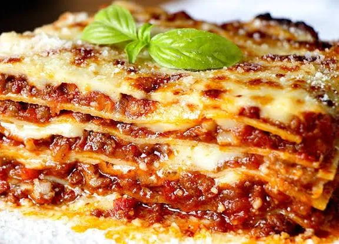

Lasagna is an iconic Italian baked dish made of stacked layers of wide, flat pasta sheets alternating with rich fillings like meat sauce (ragù), creamy béchamel or ricotta cheese, and melted mozzarella or Parmigiano-Reggiano.
The Meat Sauce (Ragù): Brown minced onions, carrots, celery, and garlic in olive oil. Add ground beef and pork, pouring in a splash of dry white wine to reduce. Stir in tomato purée or crushed tomatoes and let it simmer low and slow for at least 1 to 2 hours until incredibly thick and flavorful.
The Béchamel (White Sauce): Melt butter in a saucepan, whisk in an equal amount of flour to make a paste (roux), and gradually stream in warm milk. Whisk constantly over medium heat until thick and velvety, finishing with a pinch of salt and ground nutmeg.
The Pasta: Boil your lasagna sheets in salted water until just al dente (firm to the bite). Drain them and lay them flat on clean towels to dry so they are manageable. (Note: If using no-boil sheets, skip this step).
Grab a deep, oven-safe baking dish. You will want to build a minimum of three to four layers:
Base: Spread a thin layer of meat sauce over the bottom of the pan to stop the pasta from sticking.
Pasta: Arrange pasta sheets side-by-side, overlapping slightly to completely cover the sauce.
Fillings: Spread a uniform layer of ragù, drizzle with the creamy white béchamel sauce, and sprinkle generously with freshly grated Parmigiano-Reggiano or mozzarella cheese.
Repeat: Place another layer of pasta on top and repeat the pattern until your ingredients are almost used up.
Top Layer: Finish with a final layer of pasta topped entirely with béchamel, a small swirl of meat sauce, and an extra heavy blanket of cheese to achieve a beautiful crust.
Bake: Cover the dish loosely with aluminum foil to keep the moisture trapped. Bake in a preheated oven at 350°F (180°C) for roughly 20 to 30 minutes. Remove the foil for the final 10 minutes to let the cheese brown and become crisp around the edges.
Rest: Once out of the oven, let the lasagna rest for 15 to 20 minutes before slicing. This allows the structural layers to cool slightly and firm up, ensuring clean, beautiful slices that don't slide apart on the plate.